Objetivo de la práctica
Montar un laboratorio en EVE-NG con un router MikroTik CHR y tres equipos Linux. En él se practican DHCP, DNS, NAT, firewall, VLAN y VPN. Finalmente, se introduce un error en DHCP para diagnosticarlo y recuperar la conectividad.
Las redes de pruebas se han creado dentro de EVE-NG. La conexión de administración permite acceder a EVE desde el ordenador, mientras que los servicios del laboratorio funcionan en sus propios segmentos.
Instalar EVE-NG en Proxmox
Primero se revisaron los recursos del servidor y la virtualización anidada. Esta permite que EVE ejecute dispositivos virtuales dentro de su propia máquina virtual.
Comprobar la virtualización anidada
En la terminal del servidor Proxmox se ejecutó:
cat /sys/module/kvm_amd/parameters/nested
El resultado fue 1, por lo que la
virtualización anidada estaba activada en el host.
En la VM de EVE se seleccionó CPU de tipo
host.

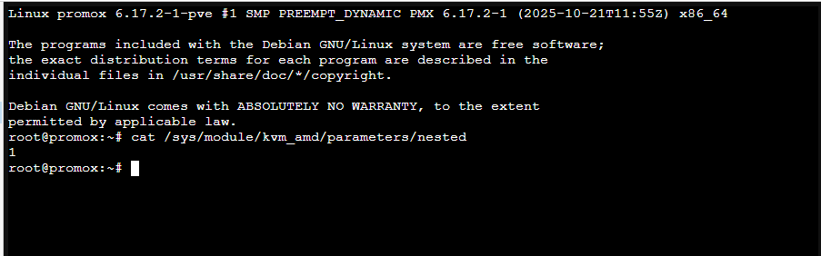
Subir la ISO y crear la VM
Se subió la ISO de EVE-NG al almacenamiento de imágenes
de Proxmox y se creó la máquina
MCS-EVE-NG.
| Recurso | Configuración inicial |
|---|---|
| Procesador | 4 núcleos y CPU de tipo host. |
| Memoria | 6144 MiB. |
| Disco | 60 GB para el laboratorio inicial. |
| Red | Adaptador conectado a vmbr0 para administrar EVE desde la red local. |
| Sistema | EVE-NG Pro 7.2.0-18, modo Freemium. |
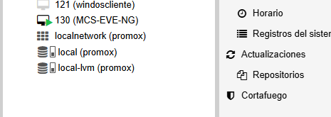
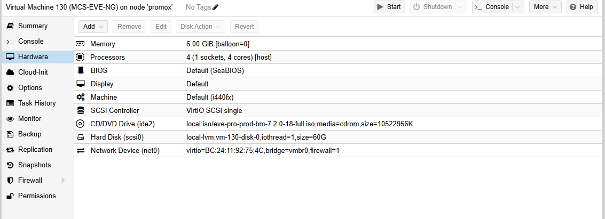
Instalación y acceso
Se completó la instalación y la configuración inicial del
servidor, llamado mcs-eve. Después se accedió
a su interfaz web para gestionar los laboratorios.
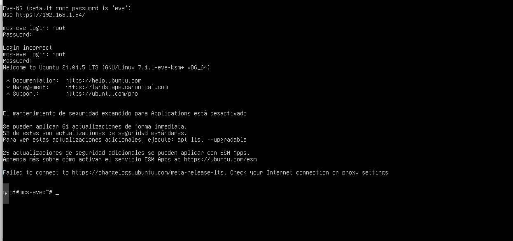

Resultado: EVE-NG quedó instalado y accesible desde el navegador.
Añadir una imagen de MikroTik CHR
Se descargó la imagen de MikroTik CHR 7.23.8 para arquitectura x86_64. Se descomprimió y se preparó en el formato utilizado por EVE-NG.
Después se añadió el router al laboratorio y se abrió su
consola. Se cambió su nombre a CHR-MCS
y se revisaron las interfaces disponibles.
/system identity set name=CHR-MCS
/interface print
El router disponía de cuatro interfaces Ethernet:
ether1, ether2,
ether3 y ether4.
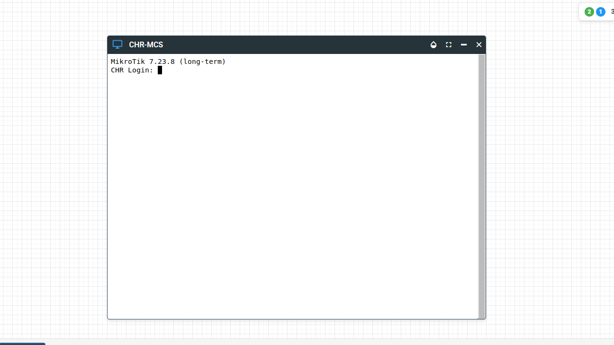
Resultado: el router arrancó y permitió trabajar desde la consola de RouterOS.
Crear la topología
Se instaló una máquina base con Ubuntu Server y soporte SSH. A partir de ella se prepararon tres nodos Linux para realizar las pruebas del laboratorio.
El router conecta la LAN, el segmento donde se practica VLAN y una WAN simulada. Linux C actúa como equipo externo de pruebas y como cliente del túnel VPN.
| Equipo o interfaz | Dirección | Función |
|---|---|---|
| CHR · ether2 | 10.20.10.1/24 | Puerta de enlace de la LAN. |
| Linux A | 10.20.10.150/24, recibida por DHCP. | Cliente para DHCP, DNS y conectividad. |
| CHR · VLAN 20 sobre ether3 | 10.20.20.1/24 | Puerta de enlace del segmento etiquetado. |
| Linux B · VLAN 20 | 10.20.20.2/24 | Cliente para las pruebas de VLAN. |
| WAN simulada | 10.20.99.0/24 | Segmento conectado a ether1 para las pruebas con Linux C. |
| Linux C | 10.20.99.2/24 | Equipo externo y cliente VPN. |
| CHR · WireGuard | 10.20.30.1/24 | Extremo del túnel en el router. |
| Linux C · WireGuard | 10.20.30.2/24 | Extremo del túnel en Linux. |
La LAN 10.20.10.0/24 utiliza ether2 directamente. La práctica de etiquetado se realizó con VLAN 20 sobre ether3.
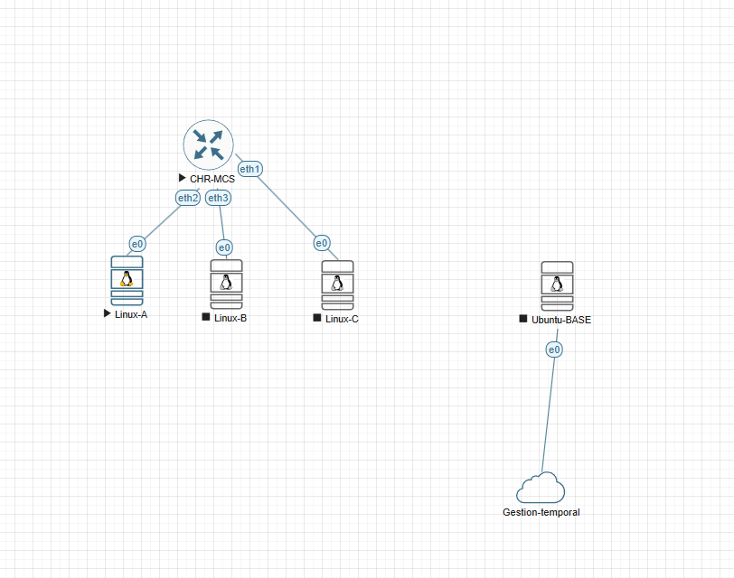
Resultado: se dispuso de un CHR y tres equipos Linux conectados a los segmentos de prueba.
Configurar y comprobar los servicios
DHCP: asignación automática de red
Se configuró el servidor dhcp-LAN-A en
ether2, utilizando el grupo de direcciones
pool-LAN-A y una concesión de una hora.
Los clientes reciben una dirección de la red
10.20.10.0/24, con puerta de enlace
y DNS 10.20.10.1.
Comandos utilizados para revisar el servicio en CHR:
/ip address print
/ip dhcp-server print
/ip dhcp-server network print detail
/ip dhcp-server lease printEn Linux se comprobó la dirección recibida y su ruta predeterminada.
ip -br addr
ip route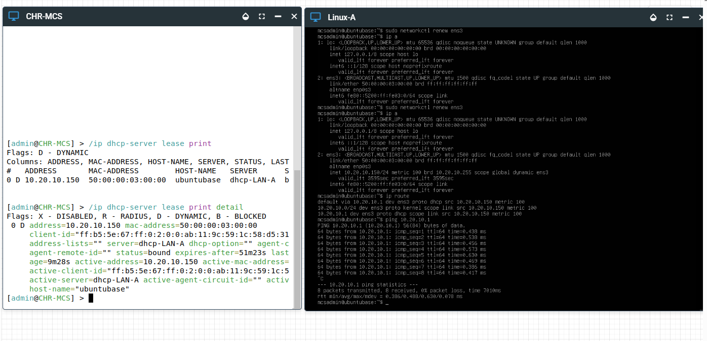
DNS: resolución de nombres
Se utilizó CHR como servidor DNS para la LAN y se trabajó
con el nombre interno router.lab.home.arpa.
Desde Linux se consultó el nombre para comprobar su
resolución.
Consulta desde Linux:
nslookup router.lab.home.arpa 10.20.10.1Revisión de la configuración en CHR:
/ip dns print
/ip dns static printEl objetivo fue comprobar que el cliente podía obtener una dirección a partir de un nombre.
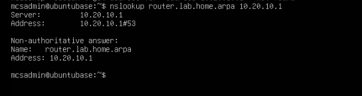
NAT: traducción de direcciones
Se configuró una regla de NAT con acción
masquerade para traducir el tráfico de
salida hacia la WAN simulada.
Se generó tráfico hacia Linux C y se revisaron los contadores de la regla. Esta prueba se realizó dentro del laboratorio, sin necesitar una salida real a Internet.
/ip firewall nat print detail
/ip firewall nat print stats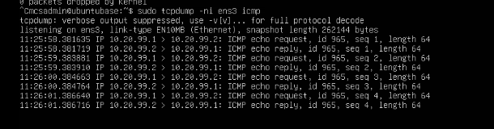
Firewall: permitir o bloquear tráfico
Se creó una regla de prueba identificada como
BLOQUEO-PING. Se comparó la conectividad
con la regla activa y desactivada, revisando también
sus contadores.
/ip firewall filter print detail
/ip firewall filter print statsAl terminar la prueba se dejó desactivada la regla de bloqueo para continuar con el resto del laboratorio.
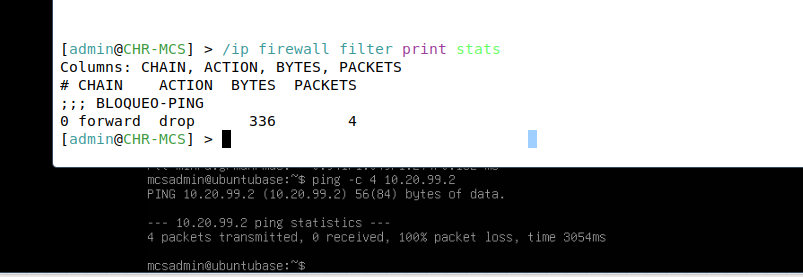
VLAN: trabajar con tráfico etiquetado
Se configuró la VLAN 20 sobre el enlace entre ether3 de CHR y Linux B. Ambos extremos utilizaron el mismo identificador de VLAN.
CHR utiliza 10.20.20.1/24 y Linux B
10.20.20.2/24 en ese segmento.
Comprobaciones en CHR:
/interface vlan print detail
/ip address printComprobaciones en Linux B:
ip -d link show
ip -br addr
ping -c 4 10.20.20.1La prueba permitió comprobar la comunicación dentro de la VLAN. El filtrado entre redes se gestiona mediante reglas de firewall.
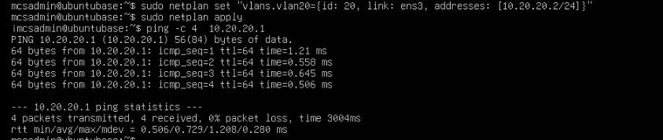
VPN: túnel WireGuard
Se creó un túnel WireGuard entre CHR y Linux C.
En el router se utilizó la interfaz
wg-lab.
Los extremos del túnel utilizan
10.20.30.1 y
10.20.30.2. Se intercambiaron las claves
públicas y se comprobaron el túnel y la conectividad.
Comprobaciones en CHR:
/interface wireguard print
/interface wireguard peers print detailComprobaciones en Linux C:
sudo wg show
ping -c 4 10.20.30.1Las claves privadas permanecen en cada equipo y no se incluyen en esta documentación.
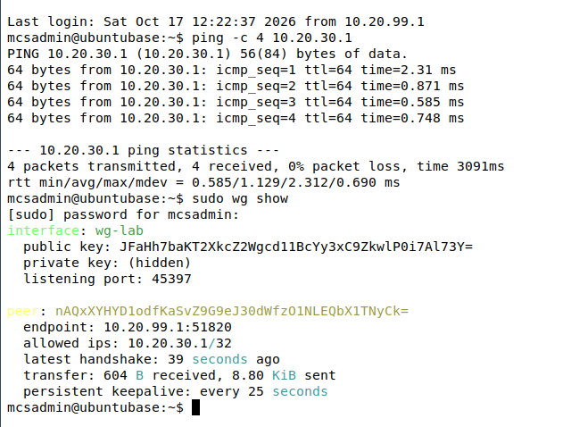
| Servicio | Qué se comprobó |
|---|---|
| DHCP | Asignación de IP, puerta de enlace y DNS. |
| DNS | Resolución de un nombre interno. |
| NAT | Tráfico hacia la WAN simulada y contadores. |
| Firewall | Bloqueo y recuperación de una prueba de ping. |
| VLAN | Comunicación etiquetada mediante VLAN 20. |
| VPN | Estado de WireGuard y conectividad del túnel. |
Provocar una incidencia controlada
Se modificó la puerta de enlace que el servidor DHCP
entregaba a Linux A. El valor correcto,
10.20.10.1, se sustituyó por
10.20.10.254.
Primero se consultó la configuración:
/ip dhcp-server network print detailEn la salida del laboratorio, la entrada de la LAN correspondía al número 0. Sobre ella se aplicó el cambio:
/ip dhcp-server network set 0 gateway=10.20.10.254
/ip dhcp-server network print detailDespués se renovó la configuración DHCP del cliente. Linux A recibió una puerta de enlace que no correspondía al router del segmento.
Síntoma: el cliente conservaba su dirección de la LAN, pero la salida hacia otras redes utilizaba una puerta de enlace incorrecta.
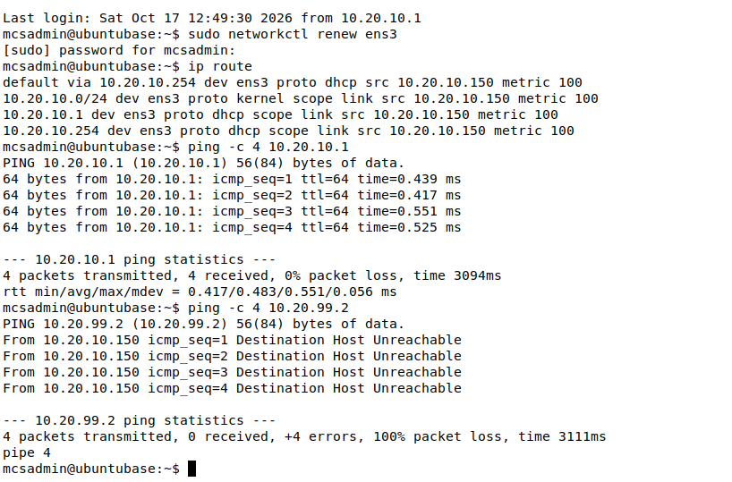
Diagnosticar y corregir la incidencia
Se revisaron la dirección y las rutas de Linux A.
La ruta predeterminada apuntaba a
10.20.10.254, mientras que la dirección
real de CHR en la LAN era 10.20.10.1.
ip -br addr
ip routeAl revisar DHCP en el router se localizó el valor incorrecto. Se restauró la puerta de enlace original:
/ip dhcp-server network set 0 gateway=10.20.10.1
/ip dhcp-server network print detailSe renovó de nuevo la configuración del cliente y se repitieron las pruebas de conectividad.
| Comprobación | Diagnóstico |
|---|---|
| Dirección del cliente | Pertenecía a la red 10.20.10.0/24. |
| Ruta predeterminada | Apuntaba a 10.20.10.254. |
| Dirección real del router | 10.20.10.1. |
| Causa del fallo | Puerta de enlace incorrecta anunciada por DHCP. |
| Solución | Restaurar 10.20.10.1 y renovar la configuración del cliente. |
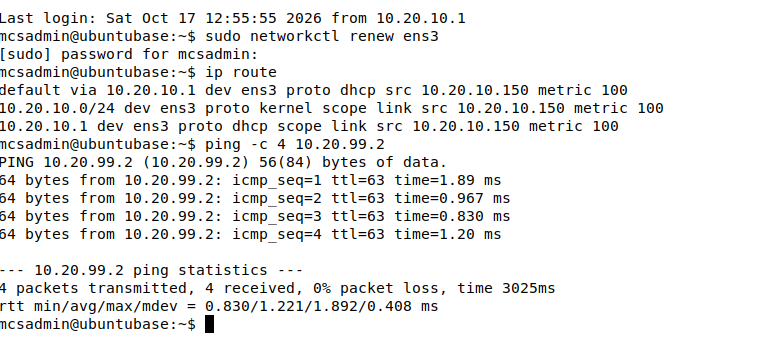
Resultado: se restauró la puerta de enlace correcta y se recuperó la conectividad de prueba.
Conclusión
Esta práctica permite ver cómo trabajan juntos los servicios de red. También muestra que tener una IP correcta no basta: una puerta de enlace mal configurada puede impedir la comunicación con otras redes.